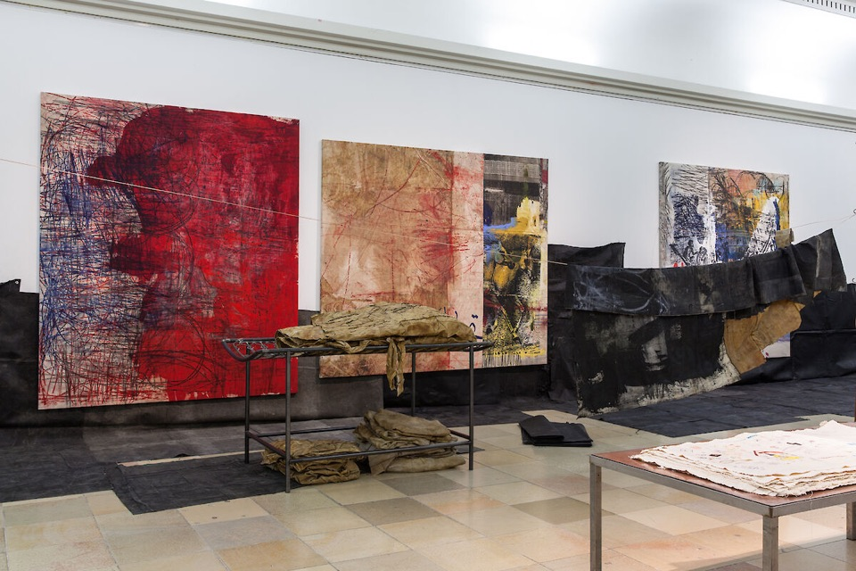
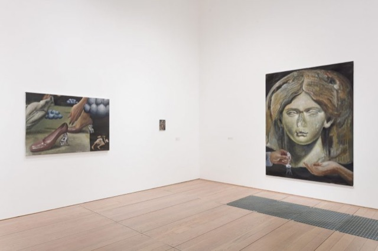
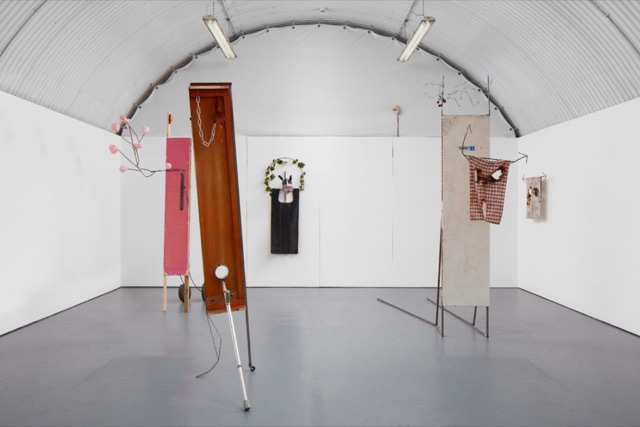
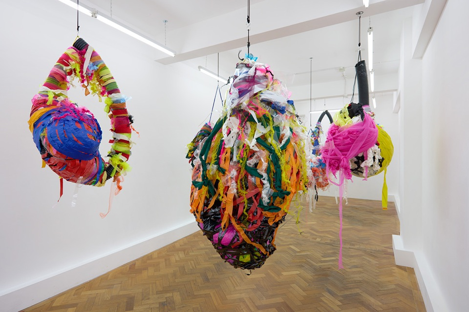
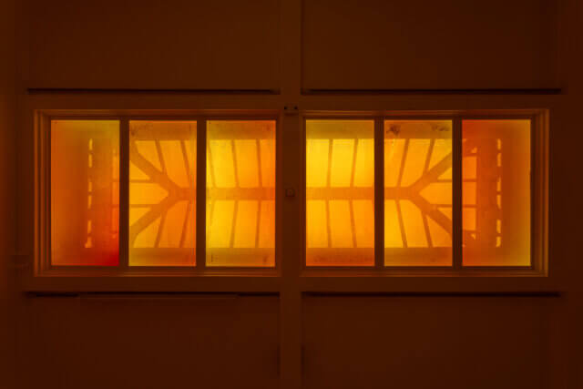

Painting & installation
Oscar Murillo
Surfaced by Carlos/Ishikawa
Oscar Murillo, Capsule 07. Installation view at Haus der Kunst, Munich, 2017.
Public preview
Your choices are saved in this browser.

Painting & installation
Surfaced by Carlos/Ishikawa
Oscar Murillo, Capsule 07. Installation view at Haus der Kunst, Munich, 2017.

Painting
Surfaced by Carlos/Ishikawa
Issy Wood, All The Rage. Installation view at Goldsmiths CCA, London, 2019.

Sculpture & installation
Surfaced by Arcadia Missa
Jesse Darling, The Great Near. Installation view at Arcadia Missa, London, 2016.

Sculpture & drawing
Surfaced by Arcadia Missa
Nnena Kalu. Installation view at Arcadia Missa, London, 2024.

Photography & sculpture
Surfaced by Brunette Coleman
Nat Faulkner, Strong water. Installation view at Camden Art Centre, London, 2026.